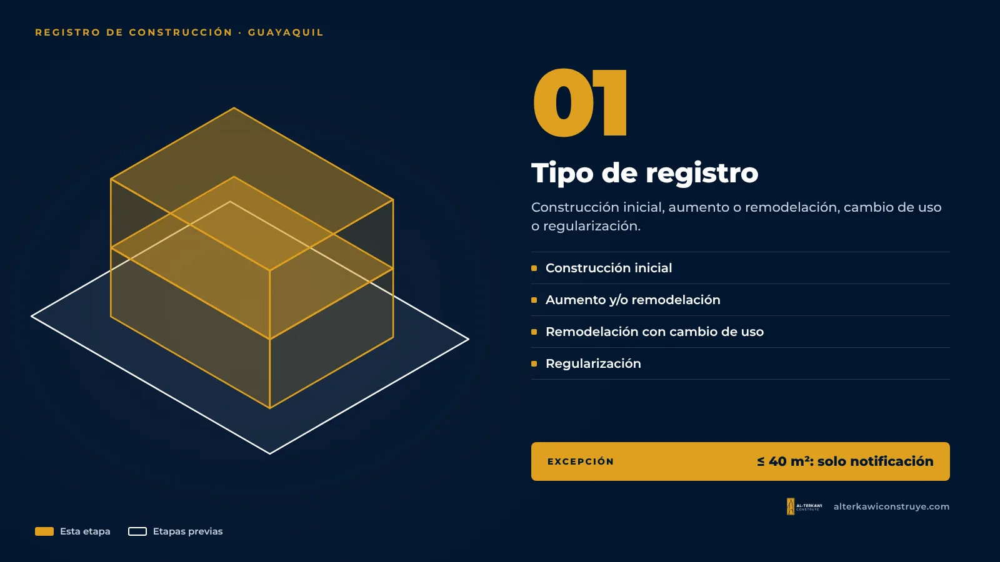
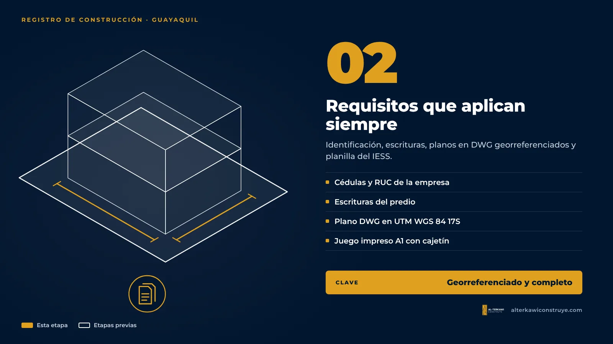
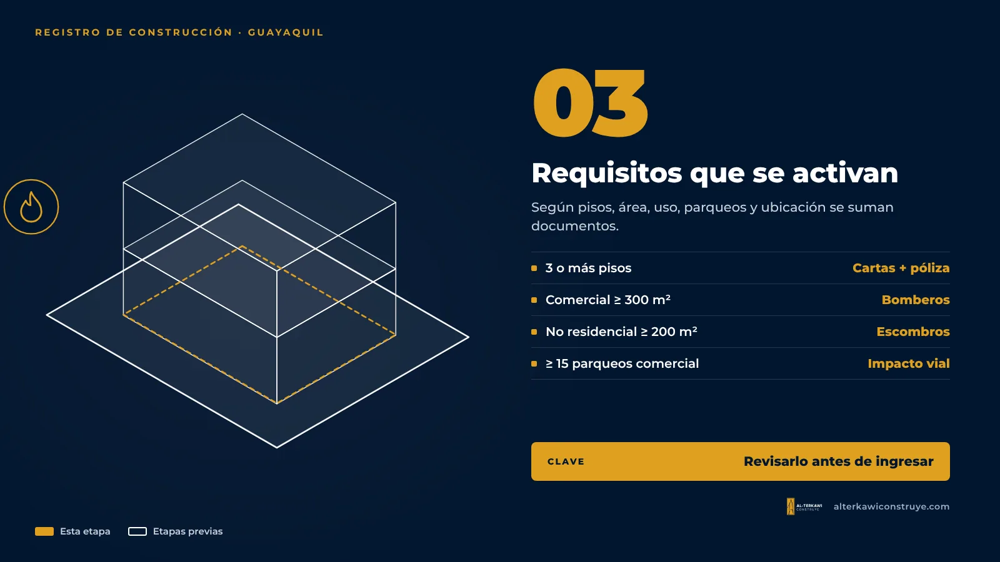
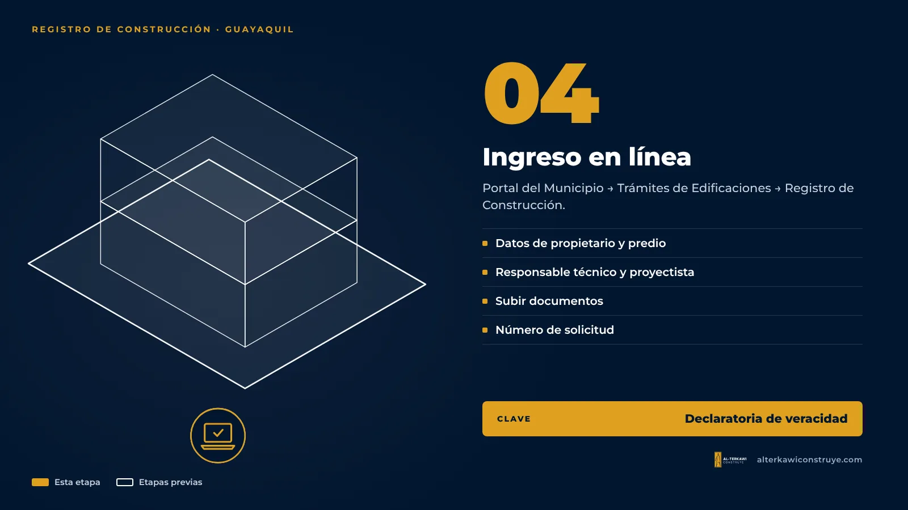

Registro de Construcción en Guayaquil para locales comerciales y oficinas: requisitos 2026

En Guayaquil, el permiso para construir se llama Registro de Construcción. Es la autorización municipal que da el derecho a edificar y se tramita en línea desde el portal del Municipio. Para una empresa, lo importante no es el formulario, sino saber qué requisitos especiales se activan según su proyecto.
Tipos de registro

- Construcción inicial (obra nueva).
- Aumento y/o remodelación.
- Remodelación con cambio de uso.
- Regularización de una edificación existente.
Las obras menores de hasta 40 m² dentro del predio no requieren registro, pero se notifican también en línea.
Requisitos que aplican siempre

- Cédula y certificado de votación del propietario, del responsable técnico y del proyectista.
- Si el propietario es una empresa: RUC y nombramiento del representante legal.
- Escrituras del predio.
- Plano arquitectónico en DWG (ubicación, implantación, cubierta, cortes y fachada), acotado y georreferenciado en UTM WGS 84 zona 17S, más un juego impreso en A1 con el cajetín exigido.
- Planilla del IESS (resumen de registro patronal).
- Si tramita un tercero: autorización notariada.
Requisitos que se activan según el proyecto

| Si su proyecto… | Se suma |
|---|---|
| Tiene 3 o más pisos | Cartas de responsabilidad técnica notariadas (estructural, sanitario, eléctrico y telefónico, suelos) y póliza de responsabilidad civil a terceros |
| Es comercial desde 300 m² o de dos niveles, oficina desde 300 m², bodega desde 200 m², o tiene más de 4 niveles | Disposiciones técnicas de Bomberos |
| Es no residencial desde 200 m² | Memoria técnica de desechos sólidos no peligrosos |
| Tiene 15 o más parqueos (comercial) o 20 o más (residencial/mixto) | Estudio de impacto vial |
| Es industrial de impacto medio, alto o peligroso | Licencia ambiental |
| Está en un terreno con pendiente de 10 % o más | Carta de responsabilidad por movimiento de tierras y muros |
| No cumple los retiros mínimos con vecinos | Autorización notariada de adosamiento |
| Colinda con el estero o el río | Delimitación de zona de playa y bahía (DIRNEA) |
Paso a paso del ingreso

- Entrar al portal del Municipio, Servicios en línea, Trámites de Edificaciones.
- Elegir Registro de Construcción y el tipo de obra.
- Cargar datos del propietario, el predio, el responsable técnico y el proyectista.
- Registrar uso, materiales y datos del proyecto.
- Subir toda la documentación y aceptar la declaratoria de veracidad. El sistema genera un número de solicitud para dar seguimiento.
Vigencia y prórroga
Si la obra no va a terminar en el plazo del registro, la prórroga debe pedirse mientras el registro esté vigente. Si caduca, hay que tramitar un registro nuevo y pagar de nuevo la tasa de aprobación. Para una empresa con obras en varias sucursales, llevar un calendario de vencimientos evita este gasto.
Errores frecuentes en expedientes corporativos
- Planos sin georreferenciar o con cajetín incompleto.
- Ingresar sin las disposiciones de Bomberos en locales que superan 300 m².
- Remodelar con cambio de uso sin revisar antes el uso de suelo.
- Cambiar el diseño durante la obra sin tramitar la modificación de planos.
Siga leyendo

Llevamos su registro de principio a fin
Expediente completo, ingreso en línea y respuesta a observaciones.

Arquitecto en Guayaquil, Samborondón y Daule. Permisos municipales y obra para viviendas y empresas.